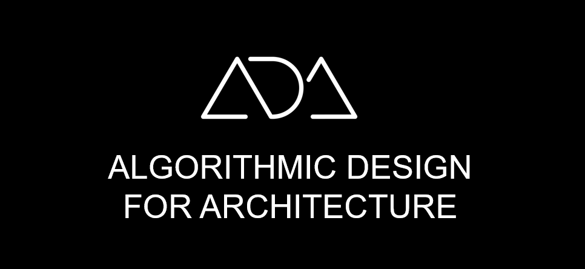
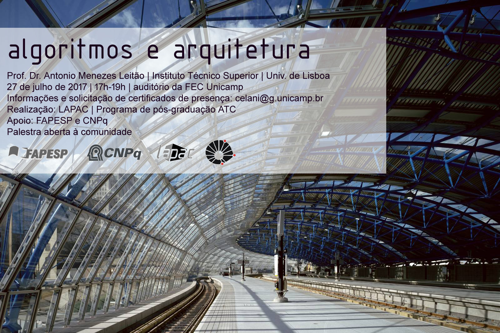
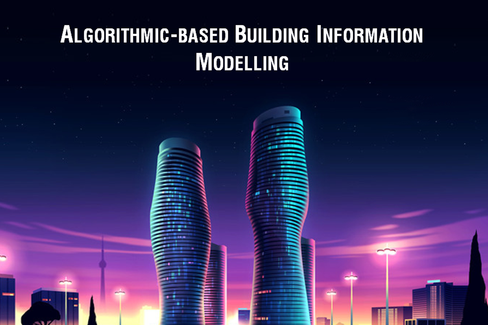
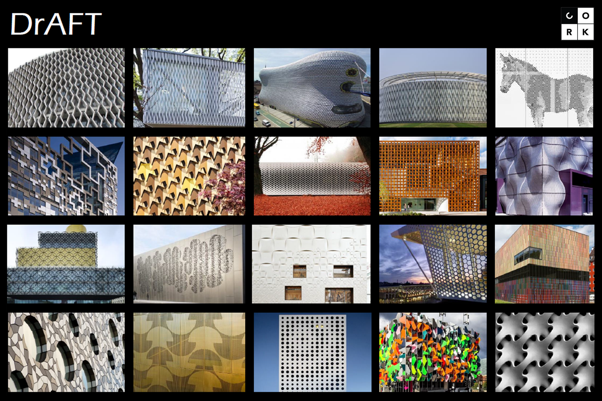
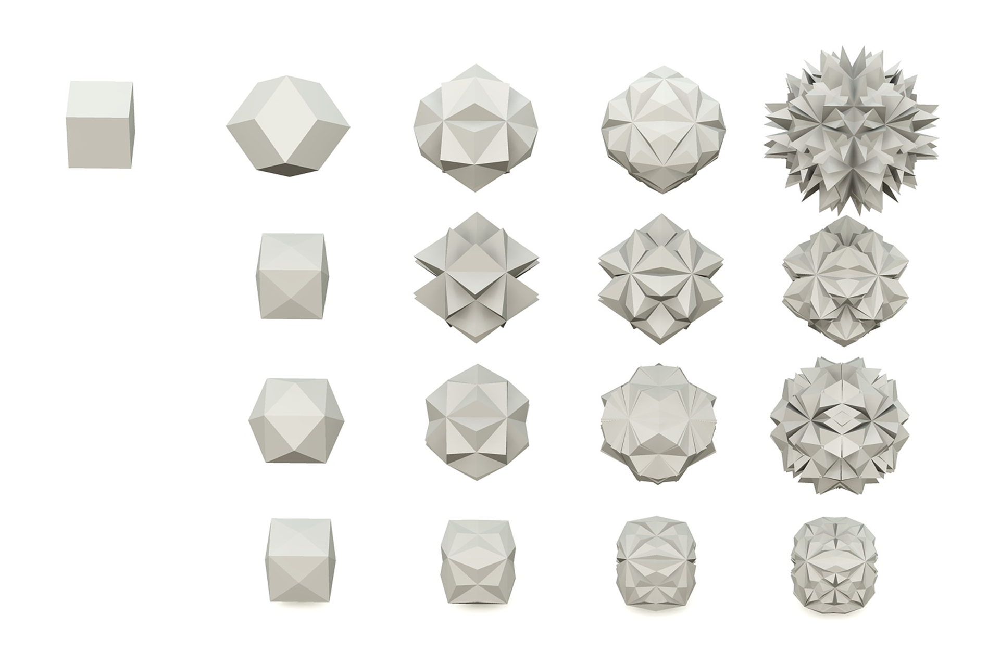
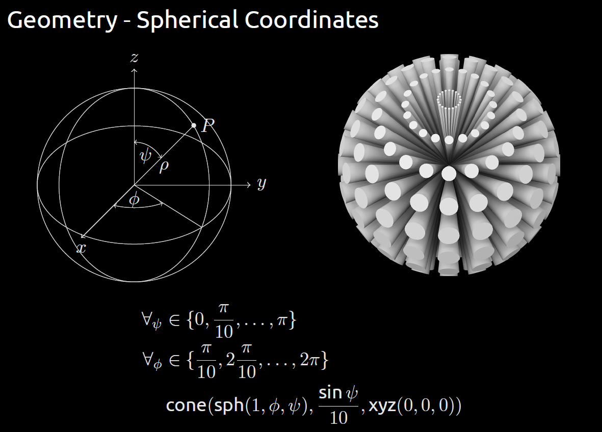

Invited Talks

António Menezes Leitão
April 2017
Seminar at Disney Research China (DRC), Shanghai
Algorithmic Design for Architecture
April 2017
Seminar at Disney Research China (DRC), Shanghai

António Menezes Leitão
July 2017
LAPAC - Programa de pós-graduação ATC/FEC, at Faculdade de Engenharia Civil, Arquitetura e Urbanismo da Unicamp, Brazil
Algorithmic Design for Architecture
July 2017
LAPAC - Programa de pós-graduação ATC/FEC, at Faculdade de Engenharia Civil, Arquitetura e Urbanismo da Unicamp, Brazil

Sofia Feist
February 2017
Palestras de Projecto Final de Arquitectura, at ISCTE-IUL (Lisbon University Institute), Portugal
Algorithmic-based Building Information Modelling
February 2017
Palestras de Projecto Final de Arquitectura, at ISCTE-IUL (Lisbon University Institute), Portugal

Inês Caetano
July 2016
International Cork Workshop: New Uses in Architecture, at FAUL (Faculty of Architecture, University of Lisbon), Portugal
DrAFT: An Algorithmic Framework for Facade Design
July 2016
International Cork Workshop: New Uses in Architecture, at FAUL (Faculty of Architecture, University of Lisbon), Portugal
Portable Algorithmic Architecture
May 2016
Closing workshop of the Tecton 3D investigation project, at FAUL (Faculty of Architecture, University of Lisbon), Portugal

Programming Shape: A Formal Paradigm
April 2015
Beyond Shape workshop, at Universidade Lusófona de Humanidades e Tecnologias, Lisbon, Portugal

Rodrigo Correia
December 2012
at FAUL (Faculty of Architecture, University of Lisbon), Portugal
Gramáticas da Forma - implementações (in Portuguese)
December 2012
at FAUL (Faculty of Architecture, University of Lisbon), Portugal

António Menezes Leitão
February 2012
Ciclo de Seminários do 5ºano do Mestrado Integrado em Arquitectura, at ISCTE-IUL (Lisbon University Institute), Portugal
Teaching Computer Science in Architecture
February 2012
Ciclo de Seminários do 5ºano do Mestrado Integrado em Arquitectura, at ISCTE-IUL (Lisbon University Institute), Portugal

Computer Science in Architecture
December 2011
Processos Generativos, at Instituto Superior Técnico – ISTAR- Laboratório de Investigação em Arquitectura, Lisbon, Portugal
Publications
our published work
Awards
collected by our team members
Timeline
our research topics and projects